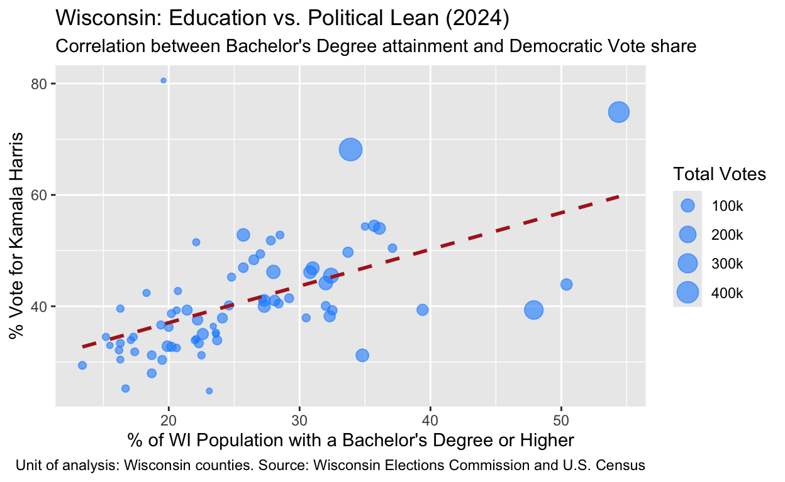
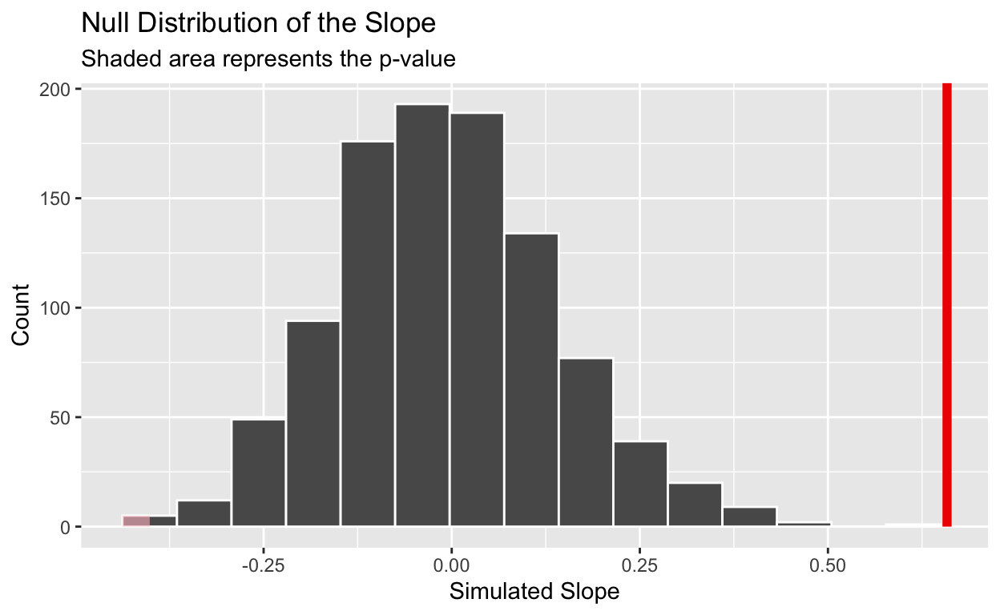
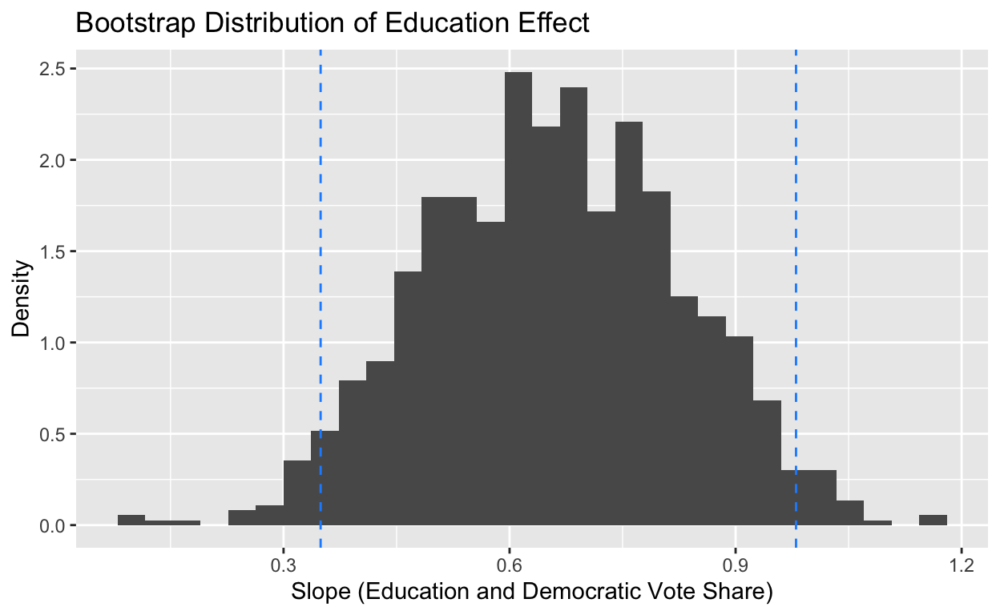

PS270 Final Project
Examining the relationship between education level and voting behavior has become a focal point of American politics. This research asks: Among Wisconsin counties, does educational attainment predict Democratic vote share in the 2024 Presidential election? Specifically, it looks at whether counties with a higher proportion of adults with a bachelor’s degree or higher are more likely to support the Democratic candidate, Kamala Harris. County-level data from the Wisconsin Elections Commission are combined with demographic data from the US Census via the NIH HDPulse Data Portal to help examine this question. This study tests the hypothesis that counties with higher educational attainment will exhibit a significantly higher vote share for Kamala Harris. This hypothesis is grounded in the idea that education shapes political attitudes by exposing individuals to diverse perspectives and civic engagement, which aligns closely with the values held by the Democratic Party.
This question is important because it sheds light on broader patterns of political polarization and voting behavior within a key swing state. Wisconsin has played a decisive role in recent presidential elections, so understanding the demographic factors that influence voting outcomes at the country level can explain how elections play out more broadly. Analyzing how education level is associated with partisan preference, accounting for confounders such as income and population density, furthers ongoing debates about political division in the United States.
The data for this research is merged from two official sources to ensure accuracy. The unit of analysis in this study is the county. The dependent variable, Democratic Vote Share in the 2024 Presidential Election, is sourced from the Wisconsin Elections Commission (WEC) county-level voter turnout. The independent variable, educational attainment, is retrieved from the U.S. Census Bureau’s American Community Survey, which is a 5-year estimate via the NIH HDPulse Data Portal. The portal includes a comprehensive dataset of socioeconomic indicators across all 72 Wisconsin counties. Rather than tracking changes over time or using an experimental design, this dataset is cross-sectional, as it observes all Wisconsin counties at a single point in time to assess how educational backgrounds influence voting behavior. This is the most effective design for identifying geographic and demographic patterns at the state level.
The dependent variable is measured as a percentage of total votes cast for Kamala Harris in each county, calculated as the number of votes for Harris divided by total votes cast, multiplied by 100. Alternatively, a two-party Democratic vote share variable was constructed, calculated as the proportion of votes for Harris out of the combined votes for Harris and Donald Trump. The independent variable, educational attainment, is measured as the percentage of adults aged 25 and older with a bachelor’s degree or higher in each Wisconsin county. The hypothesis will be supported if there is a positive association between educational attainment and Democratic vote share. The hypothesis will be rejected if the relationship is negative or not meaningfully different from zero.
| County | Total Votes | Harris Votes | Trump Votes | Harris (%) | Trump (%) | Harris Two-Party Share (%) | Education (%) |
|---|---|---|---|---|---|---|---|
| ADAMS | 12,882 | 4,443 | 7,763 | 34.49 | 60.26 | 36.40 | 17.3 |
| ASHLAND | 8,955 | 4,612 | 4,191 | 51.50 | 46.80 | 52.39 | 22.1 |
| BARRON | 26,809 | 8,941 | 16,726 | 33.35 | 62.39 | 34.83 | 22.3 |
| BAYFIELD | 11,240 | 6,107 | 4,860 | 54.33 | 43.24 | 55.69 | 35.0 |
| BROWN | 149,333 | 67,937 | 79,132 | 45.49 | 52.99 | 46.19 | 32.4 |
| BUFFALO | 8,100 | 2,765 | 5,213 | 34.14 | 64.36 | 34.66 | 22.1 |
| BURNETT | 10,810 | 3,665 | 7,008 | 33.90 | 64.83 | 34.34 | 22.0 |
| CALUMET | 32,916 | 12,927 | 19,488 | 39.27 | 59.21 | 39.88 | 32.5 |
| CHIPPEWA | 38,471 | 14,573 | 23,399 | 37.88 | 60.82 | 38.38 | 24.1 |
| CLARK | 15,340 | 4,509 | 10,481 | 29.39 | 68.32 | 30.08 | 13.4 |
| COLUMBIA | 34,914 | 16,388 | 17,988 | 46.94 | 51.52 | 47.67 | 25.7 |
| CRAWFORD | 9,105 | 3,860 | 5,113 | 42.39 | 56.16 | 43.02 | 18.3 |
| DANE | 365,929 | 273,995 | 85,454 | 74.88 | 23.35 | 76.23 | 54.4 |
| DODGE | 50,300 | 16,518 | 33,067 | 32.84 | 65.74 | 33.31 | 19.9 |
| DOOR | 20,944 | 10,565 | 10,099 | 50.44 | 48.22 | 51.13 | 37.1 |
| DOUGLAS | 25,234 | 13,073 | 11,732 | 51.81 | 46.49 | 52.70 | 27.8 |
| DUNN | 25,678 | 10,643 | 14,726 | 41.45 | 57.35 | 41.95 | 29.2 |
| EAU CLAIRE | 63,177 | 34,400 | 27,728 | 54.45 | 43.89 | 55.37 | 35.7 |
| FLORENCE | 3,158 | 783 | 2,356 | 24.79 | 74.60 | 24.94 | 23.1 |
| FOND DU LAC | 58,527 | 20,495 | 37,272 | 35.02 | 63.68 | 35.48 | 22.6 |
| FOREST | 5,097 | 1,681 | 3,382 | 32.98 | 66.35 | 33.20 | 15.5 |
| GRANT | 27,306 | 10,966 | 15,922 | 40.16 | 58.31 | 40.78 | 24.6 |
| GREEN | 22,076 | 10,903 | 10,843 | 49.39 | 49.12 | 50.14 | 27.0 |
| GREEN LAKE | 11,052 | 3,449 | 7,458 | 31.21 | 67.48 | 31.62 | 22.5 |
| IOWA | 14,677 | 7,750 | 6,631 | 52.80 | 45.18 | 53.89 | 28.5 |
| IRON | 4,084 | 1,487 | 2,557 | 36.41 | 62.61 | 36.77 | 23.4 |
| JACKSON | 10,502 | 4,157 | 6,204 | 39.58 | 59.07 | 40.12 | 16.3 |
| JEFFERSON | 50,146 | 20,574 | 28,771 | 41.03 | 57.37 | 41.69 | 28.1 |
| JUNEAU | 14,553 | 4,854 | 9,525 | 33.35 | 65.45 | 33.76 | 16.3 |
| KENOSHA | 90,680 | 41,826 | 47,478 | 46.12 | 52.36 | 46.84 | 30.8 |
| KEWAUNEE | 12,484 | 4,059 | 8,267 | 32.51 | 66.22 | 32.93 | 20.6 |
| LA CROSSE | 72,261 | 39,008 | 32,247 | 53.98 | 44.63 | 54.74 | 36.1 |
| LAFAYETTE | 8,832 | 3,469 | 5,256 | 39.28 | 59.51 | 39.76 | 20.6 |
| LANGLADE | 11,664 | 3,746 | 7,782 | 32.12 | 66.72 | 32.49 | 16.2 |
| LINCOLN | 17,209 | 6,306 | 10,633 | 36.64 | 61.79 | 37.23 | 19.4 |
| MANITOWOC | 46,316 | 17,399 | 28,200 | 37.57 | 60.89 | 38.16 | 22.2 |
| MARATHON | 78,826 | 31,529 | 46,213 | 40.00 | 58.63 | 40.56 | 27.3 |
| MARINETTE | 24,415 | 7,415 | 16,670 | 30.37 | 68.28 | 30.79 | 19.5 |
| MARQUETTE | 9,427 | 3,252 | 6,041 | 34.50 | 64.08 | 34.99 | 15.2 |
| MENOMINEE | 1,572 | 1,266 | 296 | 80.53 | 18.83 | 81.05 | 19.6 |
| MILWAUKEE | 464,107 | 316,292 | 138,022 | 68.15 | 29.74 | 69.62 | 33.9 |
| MONROE | 23,369 | 8,476 | 14,563 | 36.27 | 62.32 | 36.79 | 20.0 |
| OCONTO | 24,912 | 6,967 | 17,675 | 27.97 | 70.95 | 28.27 | 18.7 |
| ONEIDA | 24,895 | 10,080 | 14,455 | 40.49 | 58.06 | 41.08 | 28.4 |
| OUTAGAMIE | 111,932 | 49,438 | 60,827 | 44.17 | 54.34 | 44.84 | 32.0 |
| OZAUKEE | 63,472 | 27,874 | 34,504 | 43.92 | 54.36 | 44.69 | 50.4 |
| PEPIN | 4,354 | 1,523 | 2,798 | 34.98 | 64.26 | 35.25 | 23.6 |
| PIERCE | 25,392 | 10,171 | 14,417 | 40.06 | 56.78 | 41.37 | 32.0 |
| POLK | 28,222 | 9,567 | 18,296 | 33.90 | 64.83 | 34.34 | 23.7 |
| PORTAGE | 43,258 | 21,503 | 20,987 | 49.71 | 48.52 | 50.61 | 33.7 |
| PRICE | 8,856 | 3,005 | 5,763 | 33.93 | 65.07 | 34.27 | 17.1 |
| RACINE | 107,686 | 49,721 | 56,347 | 46.17 | 52.33 | 46.88 | 28.0 |
| RICHLAND | 9,323 | 3,985 | 5,207 | 42.74 | 55.85 | 43.35 | 20.7 |
| ROCK | 88,310 | 46,642 | 40,218 | 52.82 | 45.54 | 53.70 | 25.7 |
| RUSK | 8,270 | 2,516 | 5,660 | 30.42 | 68.44 | 30.77 | 16.3 |
| SAUK | 37,584 | 18,172 | 18,798 | 48.35 | 50.02 | 49.15 | 26.5 |
| SAWYER | 11,140 | 4,599 | 6,422 | 41.28 | 57.65 | 41.73 | 27.2 |
| SHAWANO | 23,500 | 7,336 | 15,850 | 31.22 | 67.45 | 31.64 | 18.7 |
| SHEBOYGAN | 67,562 | 27,735 | 38,763 | 41.05 | 57.37 | 41.71 | 27.3 |
| ST. CROIX | 60,642 | 23,870 | 35,537 | 39.36 | 58.60 | 40.18 | 39.4 |
| TAYLOR | 11,186 | 2,823 | 8,209 | 25.24 | 73.39 | 25.59 | 16.7 |
| TREMPEALEAU | 16,079 | 6,219 | 9,661 | 38.68 | 60.08 | 39.16 | 20.2 |
| VERNON | 16,609 | 7,514 | 8,807 | 45.24 | 53.03 | 46.04 | 24.8 |
| VILAS | 16,135 | 6,119 | 9,837 | 37.92 | 60.97 | 38.35 | 30.5 |
| WALWORTH | 60,597 | 23,161 | 36,603 | 38.22 | 60.40 | 38.75 | 32.3 |
| WASHBURN | 10,978 | 3,867 | 6,962 | 35.22 | 63.42 | 35.71 | 23.6 |
| WASHINGTON | 91,407 | 28,504 | 61,604 | 31.18 | 67.40 | 31.63 | 34.8 |
| WAUKESHA | 275,787 | 108,478 | 162,768 | 39.33 | 59.02 | 39.99 | 47.9 |
| WAUPACA | 30,403 | 9,947 | 20,093 | 32.72 | 66.09 | 33.11 | 20.2 |
| WAUSHARA | 14,363 | 4,571 | 9,625 | 31.82 | 67.01 | 32.20 | 17.4 |
| WINNEBAGO | 95,371 | 44,660 | 49,179 | 46.83 | 51.57 | 47.59 | 31.0 |
| WOOD | 42,216 | 16,599 | 24,997 | 39.32 | 59.21 | 39.91 | 21.4 |
The figure below plots Democratic vote share against educational attainment for all 72 Wisconsin counties, with point size representing total votes cast. The fitted regression line shows a positive linear relationship, indicating a positive correlation between education and Democratic support. Thus, counties with higher proportions of college-educated residents tend to exhibit higher vote shares for Harris. Additionally, larger counties (bigger points) often appear toward the higher end of both education and Democratic vote share, which is consistent with the idea that urban areas reflect higher educational attainment and liberal voting behavior. This visualization serves as preliminary evidence in support of the hypothesis, though further analysis is necessary to determine statistical significance.

To further examine the relationship between educational attainment and Democratic vote share, a cross-sectional linear regression is estimated using Wisconsin county-level data from the 2024 presidential election. The estimated slope coefficient of the fit linear regression model indicates how Democratic vote share changes with educational attainment.
| Model Term | Coefficient Estimate | Interpretation |
|---|---|---|
| Intercept | 23.88 | Predicted vote share with 0% degree attainment |
| Bachelor’s Degree % | 0.66 | Increase in vote share per 1% increase in degrees |
Based on the linear regression results, there is empirical support for the hypothesis that higher educational attainment is a significant predictor of Democratic vote share among Wisconsin counties. The coefficient estimate of 0.66 for “Bachelor’s Degree %” indicates that for every 1% increase in the proportion of adults with a bachelor’s degree or higher, the vote share for Kamala Harris is predicted to increase by roughly 0.66 percentage points. The 23.88 intercept value suggests that Harris would have a baseline support of 23.88% in a hypothetical county with no Bachelor’s degree attainment.
To determine if the relationship between education and voting behavior is statistically significant, a permutation test was conducted with 1,000 repetitions. The resulting null distribution of the slope represents what the relationship would look like if there was a real connection between education and Democratic vote share. The red vertical line represents the observed slope from the real Wisconsin county-level data.

| p-value |
|---|
| 0 |
The observed slope falls completely outside the null distribution and the resulting p-value is 0. Because the p-value is well below the standard threshold of 0.05, the null hypothesis can be rejected with a high degree of certainty. This provides strong evidence that the relationship between educational attainment and Democratic vote share in Wisconsin is not a product of random chance.
To assess the precision of the relationship between education and voting behavior, a bootstrap distribution of the slope was generated using 1,000 resamples. The following distribution shows the range of possible slope coefficients one could expect to see. The 95% percent confidence interval (the blue dashed line) ranges from approximately 0.35 to 0.98.

The bootstrap distribution of the slope coefficient is centered around approximately 0.66. Because the 95% confidence interval lies entirely above zero, it can be concluded that the relationship between educational attainment and Democratic vote share is statistically significant. This suggests that a one-percentage point increase in the share of individuals over 25 with a bachelor’s degree is associated with an increase of approximately 0.66 percentage points in vote share for Kamala Harris, as the true effect likely falls within the estimated confidence interval.
However, because this research utilizes cross-sectional observational data rather than an experimental design, the relationship should be interpreted as a correlation rather than a causal effect. This is because counties were not randomly assigned different levels of educational attainment, and other factors, such income and population density, may influence education levels and voting behavior. This makes it difficult to isolate the independent effect of education on Democratic vote share.
This analysis provides strong empirical support for the hypothesis that educational attainment is a significant predictor of Democratic support in Wisconsin’s 2024 presidential election. Both the permutation test (p < 0.05) and the bootstrap 95% confidence interval (0.35, 0.98) confirm a positive association. This indicates that as each county’s bachelor’s degree attainment increases, so does the Democratic vote share. However, it is important to note that these results are subject to limitations and threats to interference. First, because this design is cross-sectional, it is vulnerable to omitted variable bias, where factors such as median household income, racial demographics, or population density can confound the relationship between education and voting behavior. Additionally, because this analysis relies on aggregate county-level data, it can be observed that highly educated counties lean Democratic, but it cannot technically be proven that individual degree-holders within those counties were the ones who cast votes for Kamala Harris. To improve this research, future studies should conduct individual-level surveys or exit polls to isolate education as a variable from other socioeconomic factors, thereby avoiding group-level assumptions. This data would also benefit from longitudinal data that observes multiple election cycles to understand how the effect of education on Democratic vote share has evolved over time in Wisconsin.
library(readxl)
election <- read_excel("data/2024_pres_by_county.xlsx", sheet = "Sheet2", skip = 6)
head(election)
library(readr)
library(janitor)
education <- read_csv("Data/HDPulse_data_export.csv", skip = 4) |>
clean_names()
education
library(dplyr)
election$county <- as.character(election$...1)
education$county <- as.character(education$county)
elec_edu <- left_join(election, education, by = "county")
library(dplyr)
library(stringr)
election_clean <- election %>%
rename(county_name = county) %>%
mutate(county_name = str_to_lower(trimws(county_name)))
education_clean <- education %>%
rename(county_name = county) %>%
mutate(county_name = str_to_lower(trimws(county_name))) %>%
mutate(county_name = str_remove(county_name, " county$"))
elec_edu <- inner_join(election_clean, education_clean, by = "county_name")
print(paste("Number of rows successfully matched:", nrow(elec_edu)))
head(elec_edu)
elec_edu <- elec_edu |>
rename(`county` = `...1`,
`Total Votes Cast` = `...3`,
`Kamala Harris` = `Kamala D. Harris \r\n Tim Walz`,
`Donald Trump` = `Donald J. Trump \r\n JD Vance`,
`Rank` = `rank_within_us_of_3143_counties`,
`Education` = `people_education_at_least_bachelors_degree`,
`Education %` = `value_percent`
)
elec_edu <- elec_edu |>
select(-`Randall Terry \r\n Stephen Broden`, -`Chase Russell Oliver \r\n Mike ter Maat`, -`Jill Stein \r\n Rudolph Ware`, -`Claudia De la Cruz \r\n Karina Garcia`, -`Cornel West \r\n Melina Abdullah`, -`Robert F. Kennedy, Jr. \r\n Nicole Shanahan`, -`...12`, -`...13`, -`Peter Sonski \r\n Lauren Onak (write-in)`, -`Cherunda Lynn Fox (write-in)`, -`Brian Kienitz (write-in)`, -`Doug Jenkins \r\n Kimberly LaLonde (write-in)`, -`Future Madam Potus \r\n Jessica Kennedy (write-in)`, -`André Ramone McNeil, Sr. (write-in)`, -`...2`, -`SCATTERING`)
elec_edu <- elec_edu |>
select(-`county_name`)
elec_edu <- elec_edu |>
mutate(
harris_pct = (`Kamala Harris` / `Total Votes Cast`) * 100,
trump_pct = (`Donald Trump` / `Total Votes Cast`) * 100,
dem_two_party_share = (`Kamala Harris` / (`Kamala Harris` + `Donald Trump`)) * 100
)
elec_edu
library(kableExtra)
elec_edu |>
select(county, `Total Votes Cast`, `Kamala Harris`, `Donald Trump`, harris_pct, trump_pct, dem_two_party_share, `Education %`) |>
kable(
col.names = c("County", "Total Votes", "Harris Votes", "Trump Votes", "Harris (%)", "Trump (%)", "Harris Two-Party Share (%)", "Education (%)"),
digits = 2,
format.args = list(big.mark = ",")
) |>
kable_styling(
bootstrap_options = c("striped", "hover", "condensed"),
font_size = 11) |>
scroll_box(width = "100%", height = "500px")
library(ggplot2)
library(dplyr)
library(scales)
elec_edu_plot <- ggplot(elec_edu, aes(
x = `Education %`,
y = harris_pct)) +
geom_point(aes(
size = `Total Votes Cast`),
color = "dodgerblue1", alpha = 0.6) +
geom_smooth(method = "lm", color = "firebrick", linetype = "dashed", se = FALSE) +
scale_size_continuous(
name = "Total Votes",
labels = scales::label_number(suffix = "k", scale = 1e-3)
) +
labs(
title = "Wisconsin: Education vs. Political Lean (2024)",
subtitle = "Correlation between Bachelor's Degree attainment and Democratic Vote share",
x = "% of WI Population with a Bachelor's Degree or Higher",
y = "% Vote for Kamala Harris",
caption = "Unit of analysis: Wisconsin counties. Source: Wisconsin Elections Commission and U.S. Census"
)
elec_edu_plot
fit <- lm(harris_pct ~ `Education %`, data = elec_edu)
regression_results <- data.frame(
Term = c("Intercept", "Bachelor's Degree %"),
Estimate = c(23.8833, 0.6583),
Interpretation = c(
"Predicted vote share with 0% degree attainment",
"Increase in vote share per 1% increase in degrees"
)
)
knitr::kable(regression_results,
digits = 2,
caption = "Linear Regression: Education vs. Kamala Harris Vote Share (WI, 2024)",
col.names = c("Model Term", "Coefficient Estimate", "Interpretation"))
library(infer)
library(knitr)
edu_slope <- elec_edu |>
specify(harris_pct ~ `Education %`) |>
calculate(stat = "slope")
edu_null <- elec_edu |>
specify(harris_pct ~ `Education %`) |>
hypothesize(null = "independence") |>
generate(reps = 1000, type = "permute") |>
calculate(stat = "slope")
edu_null |>
visualize() +
shade_p_value(obs_stat = edu_slope, direction = "both") +
labs(
title = "Null Distribution of the Slope",
subtitle = "Shaded area represents the p-value",
x = "Simulated Slope",
y = "Count"
)
edu_null |>
get_p_value(obs_stat = edu_slope, direction = "both") |>
rename(`p-value` = p_value) |>
kable(caption = "Permutation Test Results", digits = 4)
edu_boot <- elec_edu |>
specify(harris_pct ~ `Education %`) |>
generate(reps = 1000, type = "bootstrap") |>
calculate(stat = "slope")
edu_ci_95 <- edu_boot |>
get_confidence_interval(level = 0.95, type = "percentile")
edu_ci_95 <- edu_ci_95 |>
rename(lower = lower_ci, upper = upper_ci)
ggplot(edu_boot, aes(x = stat)) +
geom_histogram(aes(y = after_stat(density)), bins = 30) +
geom_vline(aes(xintercept = lower), data = edu_ci_95, linetype = "dashed", color = "dodgerblue1") +
geom_vline(aes(xintercept = upper), data = edu_ci_95, linetype = "dashed", color = "dodgerblue1") +
labs(
title = "Bootstrap Distribution of Education Effect",
x = "Slope (Education and Democratic Vote Share)",
y = "Density"
)